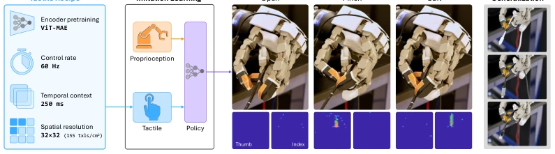
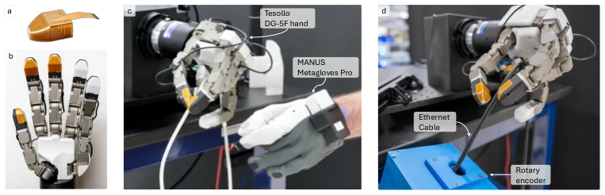
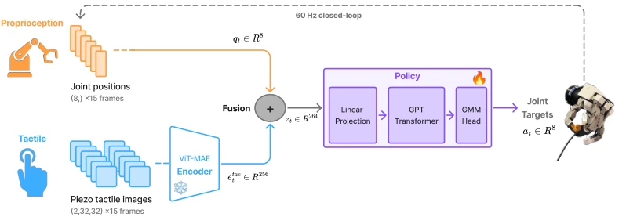
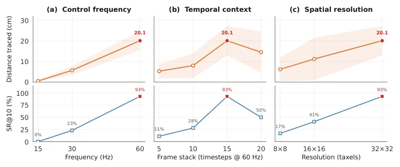
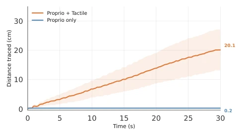
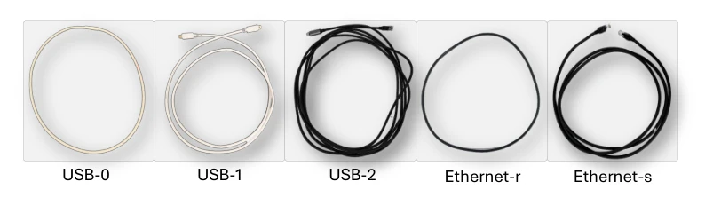
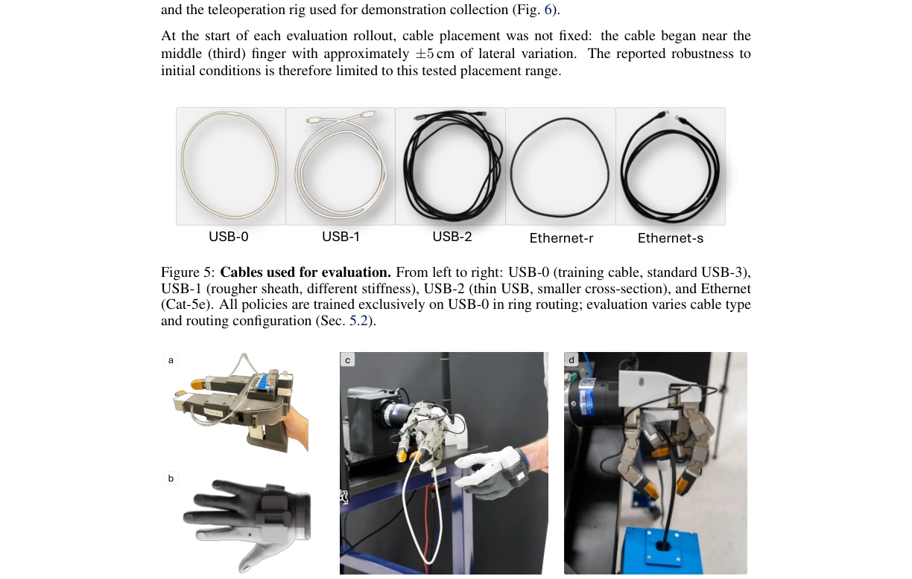
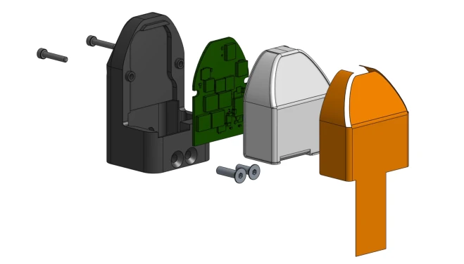
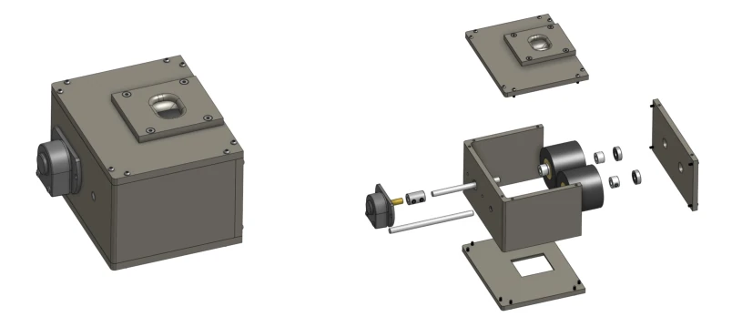
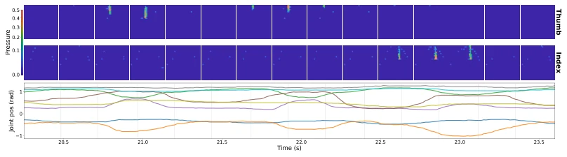

This paper resembles an "anatomy experiment" of a tactile system, rather than a mere task demonstration. The authors used 10 minutes of data to demonstrate that in cable tracking tasks, tactile signals are far more critical than proprioception (20.1cm vs 0.2cm), which is commendable. However, the design of "excluding vision," while beneficial for attribution analysis, renders the robot "blind"; in practical deployment, if environmental lighting changes or occlusion is severe, this strategy may fail outright. Furthermore, relying on custom TacV5 sensors and Tesollo manipulators results in high generalization costs. Although data efficient, treating 60Hz and 32x32 resolution as the gold standard raises questions about applicability to low-cost sensors. Overall, this is an excellent "tactile parameter tuning guide," rather than a universal "panacea." Its value lies in quantifying the marginal contribution of tactile signals to the policy, rather than the generalizability of the task itself.
Deformable Object Operation (DLO) is a challenging domain of embodied intelligence, especially cable tracking, involving continuous contact and friction regulation. Existing work mostly relies on parallel grippers [5] or explicit state estimation [8], lacking quantitative research on the characteristics of dexterous hand tactile signals. Although simulation studies [7] are numerous, real-world tactile parameters (such as encoder pre-training, control frequency) are often set arbitrarily, lacking empirical guidance. While visual-tactile systems [16, 17] are popular, it is difficult to isolate the independent contribution of tactile sensing. This paper aims to fill this gap, through systematic ablation studies, clarifying which tactile attributes truly determine policy performance, providing design basis for contact-rich dexterous manipulation.

Figure 1: Overview. Touch2Trace leverages rich, dense tactile data to learn cable tracing from only 10.1 minutes of teleoperated demonstrations. Left: the tactile recipe characterized in this work (encoder pretraining, control rate, temporal context, spatial resolution). Center: the tactile-driven imitation policy maps proprioception and tactile observations to joint commands; the hand motion is shown across three phases (open, pinch, and curl), with the corresponding 32 × 32 tactile images from thumb and index fingertips. Right: zero-shot generalization across cable variants.

Figure 2: Hardware and experimental setup. (a) TacV5 piezoresistive sensor: 32 × 32 taxels on flexible polyimide substrate. (b) Tesollo DG-5F dexterous hand with TacV5 modules on three fingertips (thumb and index used by the policy). (c) Teleoperation via Manus Metagloves Pro. (d) Rollout setup with rotary encoder for perception-decoupled ground-truth distance.
The overall process is teleoperation data collection -> tactile encoding -> policy learning. First, use Manus data gloves to teleoperate Tesollo DG-5F hand, collecting 10.1 minutes of demonstration data. The core innovation lies in the modular architecture: the tactile encoder adopts ViT-MAE, self-supervised pre-trained on large-scale contact data then frozen, avoiding overfitting under few-shot tasks. The policy network is a causal Transformer, fusing proprioception and tactile embeddings, outputting action distribution. The action head adopts Gaussian Mixture Model (GMM) rather than diffusion models, to balance inference latency and action smoothness. Inputs include 15 frames of tactile images (250ms context) and 8-DOF joint positions, outputting 60Hz joint commands. This design ensures that under limited data, utilizing the inductive bias of pre-trained tactile representations, directly mapping perception to action, without explicit object state estimation.

Figure 3: Architecture. Tactile images from two fingertips are encoded by a frozen ViT-MAE into 128-dim embeddings, concatenated with 8-DOF joint positions. A causal Transformer processes K=15 fused observations and outputs joint targets via a GMM head at 60 Hz.
Experiments were conducted on real hardware, using 4 different cables and routing configurations. Baselines include proprioception only, compact tactile features, and diffusion policies. Main metrics are tracking distance and success rate. Results show that after adding tactile, success rate increased from 0% to 93%, distance increased from 0.2cm to 20.1cm. Ablation studies show that control frequency below 60Hz or resolution below 32x32 leads to sharp performance drop, and frozen encoder is better than fine-tuning. Zero-shot generalization tests show the model can adapt to unseen cable materials and routing. However, under 30Hz, diffusion policies can initiate tracking but cannot maintain fine contact regulation, highlighting the necessity of high-frequency tactile feedback.

Figure 4: Observation Properties. (a) Control frequency, (b) temporal context (frame stack), and (c) spatial resolution. Top: distance; bottom: SR@10. In (a), frame stack is fixed at 15, so the temporal window co-varies with frequency (see text). Full tables in App. G.

Figure 10: Tracing distance over time. Cumulative cable distance traced as a function of episode time for Proprio + Tactile (TF-GMM) vs Proprio. The tactile policy traces steadily at a near-constant rate, while the proprioception-only policy stalls immediately, confirming that tactile feedback is necessary for sustained contact and forward progress.
其他图片Other Figures

Figure 5: Cables used for evaluation. From left to right: USB-0 (training cable, standard USB-3), USB-1 (rougher sheath, different stiffness), USB-2 (thin USB, smaller cross-section), and Ethernet (Cat-5e). All policies are trained exclusively on USB-0 in ring routing; evaluation varies cable type and routing configuration (Sec. 5.2).

Figure 6: Additional hardware and teleoperation details. (a) TacV5 sensors mounted on our customized UMI gripper [32] for collecting real-world tactile pretraining data (∼30K frames across 10 objects). (b) Manus Metagloves Pro: wearable glove with per-finger joint sensing, used to capture the operator’s hand pose during teleoperation. (c) Teleoperation setup: the operator wears the glove while the Tesollo DG-5F replicates finger motion. Glove joint angles are retargeted to the robot’s 8 controlled DOFs (thumb 2, index 3, middle 3) at 300 Hz via a rule-based mapping with per-joint direction multipliers and calibration scaling factors. (d) Cable-tracing rollout from an alternate angle, showing the rotary encoder and the cable resting in the passive finger cradle of the middle, ring, and pink

Figure 7: Custom tactile fingertip. Exploded view revealing the layered construction (left to right): back plate with mounting hardware, TacV5 piezoresistive sensor PCB (32 × 32 taxels, green), inner support structure, compliant silicone contact pad (orange), and outer protective shell.

Figure 8: Mechanical rotary encoder apparatus for ground-truth distance measurement. Left: Assembled enclosure with rotary encoder (side-mounted) and cable guide port (top). Right: Ex- ploded view showing the top plate with cable entry, two rubber guide rollers on a shared shaft with bearings, the rotary encoder module, and side plates. The cable passes between the rollers; as the fingers trace, cable displacement turns the rollers and the encoder records distance traveled.

Figure 9: Tactile and proprioceptive observations during a tracing episode (demo 0, t = 20.2– 23.6 s). Top: 32 × 32 piezoresistive tactile images from thumb (upper row) and index (lower row) fingertips, sampled at 15 equally spaced frames. The cable contact signature appears as a localized pressure ridge that migrates across the sensor as the finger slides. Pressure values are background- subtracted and shown with power-law normalization (γ=0.6). Bottom: 8-DOF joint position tra- jectories over the same time window. The coordinated oscillations reflect the pinch-and-curl gait: thumb and index joints modulate grip while the middle finger maintains the supporting cradle.